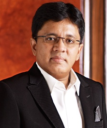

Kalanithi Maran (born 1964) is an Indian media baron who is the chairman and managing director of Sun Group.He owns television channels, newspapers, weeklies, FM radio stations, DTH services and a movie production house. He also held a major share in the Indian airline Spice Jet from 2010 to 2015.
In 1990, Maran started a monthly video (VHS) news magazine in Tamil called Poomaalai657 which was stopped in 1992. On 14 April 1993, he founded Sun TV with an investment of US$86,000 from a bank loan. Sun TV was listed on the Bombay Stock Exchange on 24 April 2006 upon raising $133 million for 10% of the share capital and catapulting him into the billionaire charts.[12] He was among the few representatives at a roundtable with the visiting then US President Bill Clinton.
By 2010, he was the 17th richest Indian with net worth of US$4 Billion,and was the highest paid business man in India.Maran and his wife, Kavery Maran were ranked second in the list of Indian executive pay charts with a package of ₹62 crore (US$9.2 million) each for the fiscal year 2011–2012, behind Congress MP Naveen Jindal.
He has won Young Businessman awards from CNBC and Ernst & Young,and Forbes magazine named him the "Television king of southern India"
Kalanithi Maran is the son of the former Union Minister of commerce Murasoli Maran and grand nephew of former Tamil Nadu chief minister M Karunanidhi. His younger brotherDayanidhi Maran was also a former minister. He married Kaveri, a native of Coorg in 1991 and has a daughter named Kaviya (Born 1992).
In May 2007, followers of M Karunanidhi's son M. K. Alagiri attacked Maran's newspaper office after a survey in the newspaper claimed that M. K. Stalin was the preferred successor to M Karunanidhi. Later in 2008, the dispute between Maran and Karunanidhi families was resolved.
Government investigator Central Bureau of Investigation filed charges against Kalanidhi Maran and his brother Dayanidhi Maran for fraud in the takeover of Aircel by Maxis Communications. In a status report to the Joint Parliamentary Committee on telecom, CBI said mala fide considerations and an "illegal gratification" of ₹550 crore(US$82 million) were behind the "active intervention" of Dayanidhi in curbing the business interests of Aircel's former owner C Sivasankaran. Alleging the Marans of arm-twisting former Aircel owner, Sivasankaran, into selling Aircel to Maxis, the CBI report states that an illegal gratification of Rs 5,499,601,793 was accepted as quid pro quo through his brother Kalanithi Maran in the garb of share premium invested in Sun Direct, owned by Kalanithi Maran